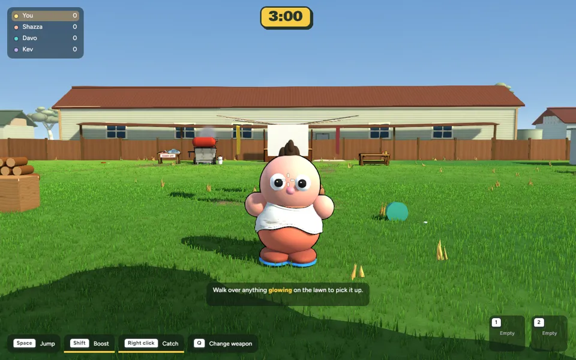
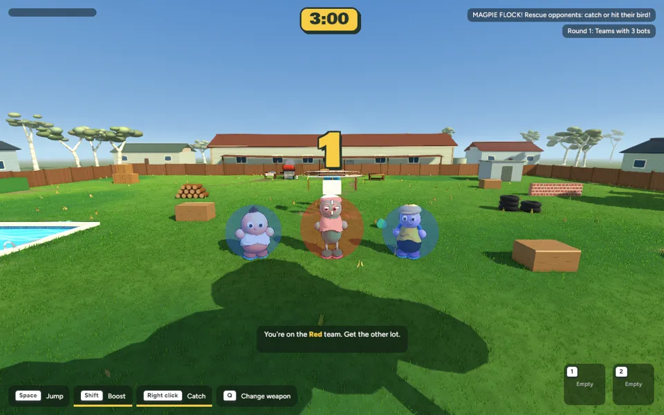
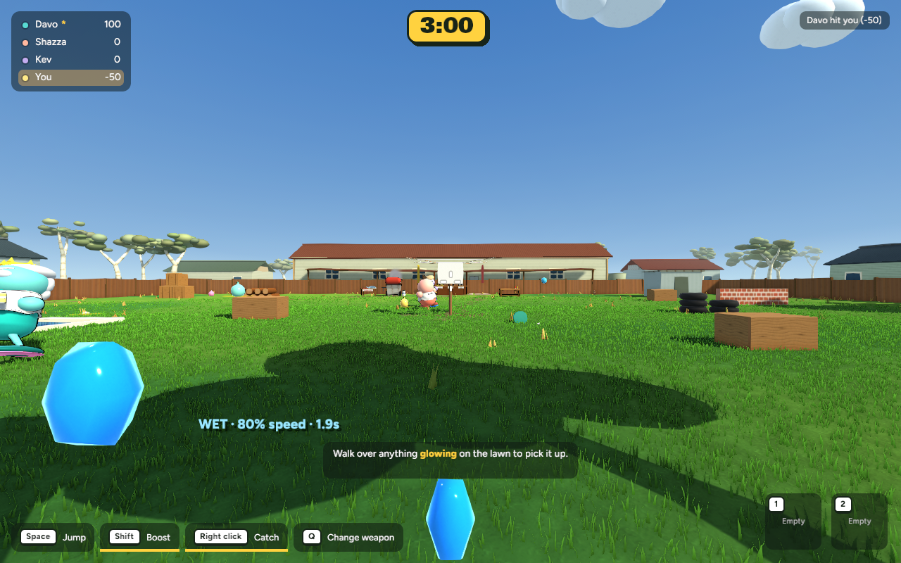
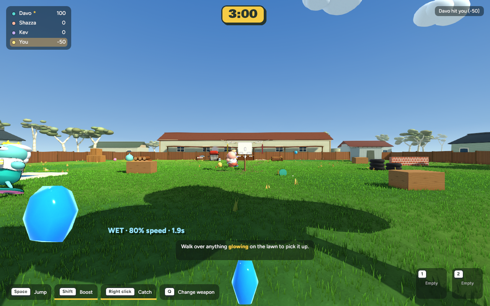
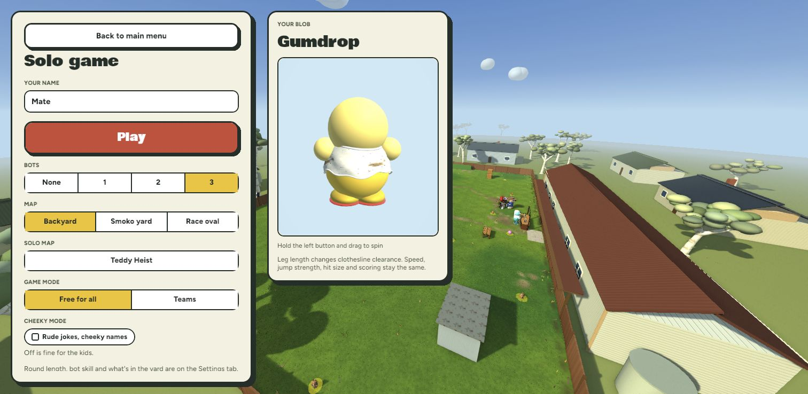
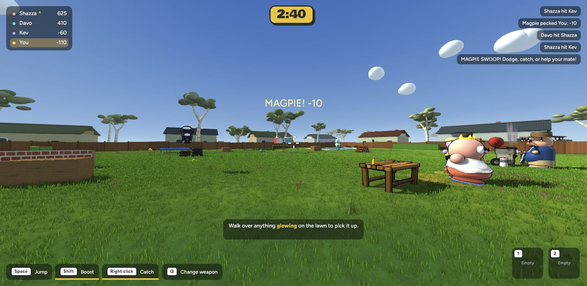

Australian BBQ · 25 October 2026 · Implemented game captures, not concepts.
Review the charge warning, overhold fall and magpie flock below. Approved for commit and push, including the rebuilt browser game and Game settings under With mates.

Hold the throw button to lean and charge. Near full charge the character trembles. Holding beyond the existing grace period cancels the throw, drops the object and causes a 1.8-second fall. Release in time to use the existing charge-power curve.
Controlled in-engine debug recording: same gameplay systems, scripted inputs and fixed camera. Walking, breathing and belly springs reuse the existing rig.
Each successful peck costs 10 points. Normal Teams attacks require a teammate to catch or hit the bird. During flocks, only opponents can rescue you. A successful projectile intersection is required; throwing nearby does not count.
Flocks occur at 65-second intervals, with an 18-second safety cap. Backyard solo and Teams only. Heist, Smoko and Race remain bird-free. No unspecified +50 reward.


Existing character shapes, customisation, shirt names, backyard layout and lighting are preserved. Added body/head gradient shading, restrained surface highlights, velocity trails and code-built item silhouettes. This is a light finish pass rather than a new art set.


668 tests pass. Native and browser builds pass. All five modes launch. Matched mean frame time: 8.859 → 8.890 ms (+0.35%); no meaningful regression in this short local check. Browser automation reports a pointer-lock error; mouse capture still needs manual testing.
Checks, performance, limitations and recovery · Tuning constants and prop-art guide
cd /Users/marcus/Claude/australian-bbq/rust ~/.cargo/bin/cargo run -p bbq_app --release -- --menu
Full pre-change backup verified. Multiplayer state and host authority have automated coverage; real network latency and human rescue balance still need a multiplayer playtest.